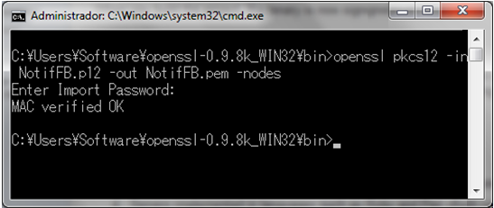
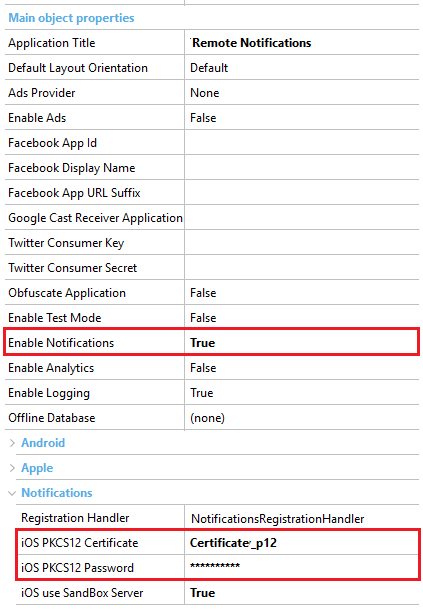
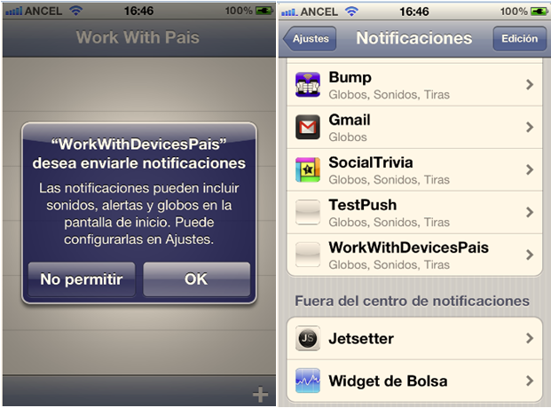

This is a step by step guide to setup push notifications for an iOS Application. If you need general information on how to use push notifications please see Push Notifications in Smart Devices Application. RequirementsPush Notifications in GeneXus applications are only available in compiled applications. This means that in the Smart Device generator preferences, we have to set the Execution Type property (in the iOS Specific group) with the value "Build IPA (Local)" and insert the connection information of the MAC OS computer where the application will be built. Also, some actions are required when developing an iOS application which uses the Apple Push Notifications Service. We need to:
Sender configurationSince GeneXus X Evolution 3 this configuration can be done at runtime using the NotificationsConfiguration external object. Notifications can be enabled for Smart Devices objects (Dashboard, WorkWithSmartDevices, SDPanel) with Main program property set to True. This can be done by setting to True the Enable Notifications property in the Main object properties group. When doing this, a new group of properties is available called Notifications with the following properties:
In these properties we have to indicate the file name and password of the SSL Certificate that was previously generated and exported in order to work with the Apple Push Notifications Service. This file has to be located in the private directory under the Web directory of the environment folder. The best way to do this is by selecting the p12 file from the property's file selector (...). By this way the file will be importing in the Knowledge Base and will automatically deployed to the private directory in the next build process. (This option is available as from GeneXus X Evolution 3 Upgrade 1). The file is usually in Public Key Cryptography Standard #12 format (p12 file extension), but when working with Ruby, a Privacy Enhanced Mail Certificate (pem file extension) is needed. Following this, the p12 Certificate needs to be converted to pem format using a conversion tool. For example, using OpenSSL we need to execute the following command to make the certificate conversion:  This file has to be included in the private directory under the Web directory of the environment folder. Despite the different certificate format requirement for Ruby, the iOS PKCS12 Certificate property can have a p12 extension filename. GeneXus will automatically search for a file with the same name and pem extension in the private directory.
Apple Push Notification Service has two different working environments, requiring a different SSL Certificate for each of them, Sandbox environment (or development, using for testing purposes) and Production environment (or distribution). In this property we have to indicate which environment we are going to work with in the Apple Push Notifications Service. Note: When we create an application with Push Notifications, at first while developing we are going to use the Sandbox environment, so we have to set iOS use Sandbox Server to True, and indicate a Development SSL Certificate file and password. At the moment of the deployment and installation of the final release, we need to switch to the Production environment, so the property values have to be changed (iOS use Sandbox Server to False, and Certificate and password of the Distribution SSL Certificate). If you are using TestFlight for testing your app, you have to use this last option. Finally, we need to consider the iOS Bundle Identifier property value, which is very important here. The default value will be com.artech.<MainObjectName>, but we need to change it (if necessary) for the Bundle Identifier configured in the App ID associated with the SSL Certificate used. A typical property configuration for a Smart Device Main object which uses Push Notifications looks as shown below:  PortsCheck if the ports indicated in this document are open: https://support.apple.com/en-is/HT203609 Intermediate StepFrom now on, every time we execute a GeneXus application which has Push Notifications enabled in a Smart Device, the Devices Registration Service is executed in order to register and store the device information to be used in the future to send messages (Push Notifications) to the device. How to send notifications?Notifications are sent as shown in this Sender example. Application executionLike any iOS applications which use the Apple Push Notifications Service, the first time we execute the GeneXus-generated iOS application, a message is shown asking if we want to enable the notifications. Regardless of the options we select in this message, the application notifications will be available to be configured later in the iOS Notifications Center.  Note: Notifications doesn't work if the client application does not give permission.
|